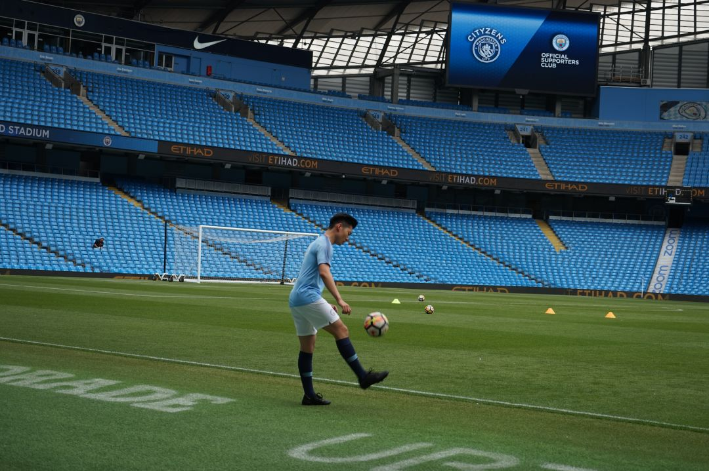
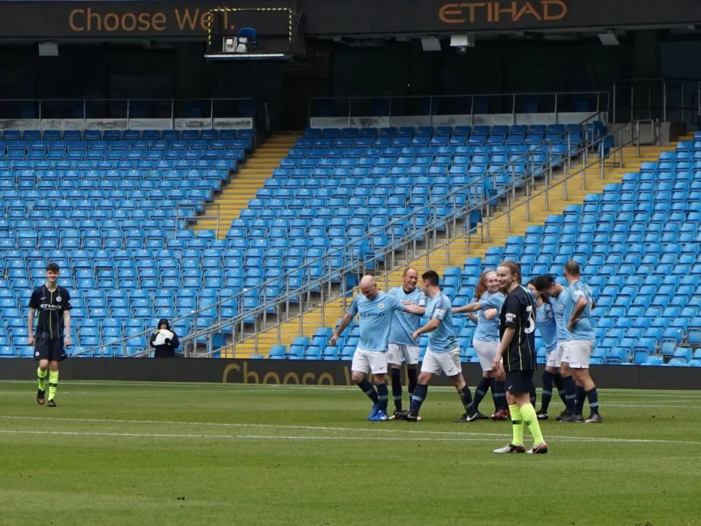
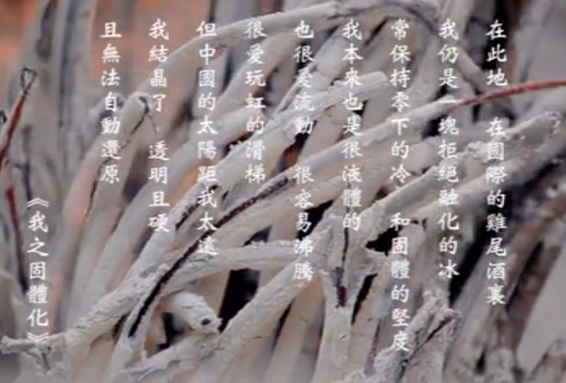
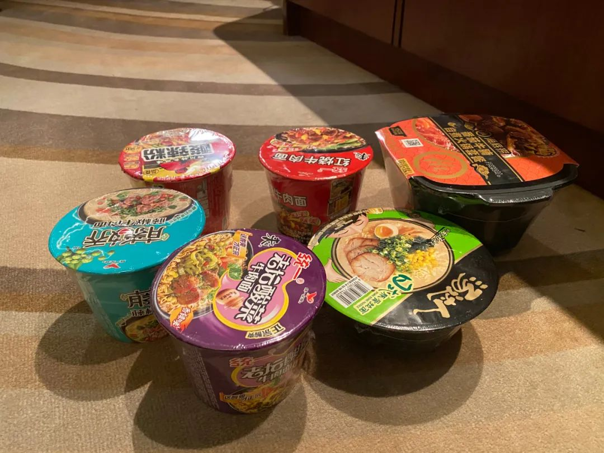

归国隔离日记 || 3月23~24日：“我们都是同一种族”
原文链接 备份链接 今天是3月24日，月相为0%的新月。 It is March 24 with a 0 percent of New Moon. 文 || 白清扬 标题说卡姐，那我偏不分享卡姐。 _今天安利一个小众乐队。 _ _这首歌简 …
今天是3月26日，月相为4%的峨眉月。
It is March 26 with a 4 percent of Waxing Crescent.
距离满月还有 13 天。
There are 13 days until Full Moon.
文 || 白清扬
_其实没有这么矫情。
_
但这首歌实在经典又好听。
《回来》，指南针乐队。
一
同样是闭门不出，回国隔离的这段日子比起在伦敦自我“隔离”的阶段，要难写的多。
大概存在一种“主客场”心理。在伦敦时，我“打客场”，有更多的事情需要担心。虽然也有“家”；虽然只要待在屋子里打死不出门，就完全没有感染的风险；虽然我的房间足够舒适；虽然物资并不算不充裕（事实上，虽然已经回国将近一个星期，我也在临行前将大量囤积的物资转送给了朋友，我在伦敦的家中依然有许多存货没有清空，比如两桶应该马上就要过期的鲜牛奶）——但只要那是伦敦，或者说得更准确一些——只要那不是北京，我的心就是悬在空中的。


△ 当然，还有一个我在伦敦是打客场的合理解释是：我不仅是曼城死忠，我还“代表曼城”在伊蒂哈德球场踢过比赛……我的主场在曼彻斯特啊。
二
简单来讲，我在伦敦的居住、生活、娱乐、深造与情感体验，这一切的目的都是为了回到北京。不同于大多数没有留学经验的朋友对于我们这个群体的想象，我相信大多数努力读书的中国留学生都是这种心态。这种体验非常诡异地契合了一九四九年以后，在台大陆人的情感体验。事实上，这种情感体验是我本科毕业论文的核心研究问题。“为什么台湾作家迫切地希望两岸文学解冻？”答曰：一种情感上的“暂时性”（impermanence）。首先，以白先勇、聂华苓、余光中等人为首的在台大陆人对于大陆有着强烈的乡愁。其次，民国政府迁台后，从法条到小学课本，社会的方方面面，无一不再强调这样一个事实：台湾仅是中华民国政府的避难所。1950年，台湾省政府教育厅颁布《台湾省非常时期教育纲领实施办法》；课纲强调“光复大陆是爱护国土的表现”；教科书中充满“反攻大陆后，我们……”这样的表述。 这种表述反复出现，传递了一个非常强烈的信号，即“我们目前在台湾的生活是非常时期的非常情况，是暂时的”。既然是暂时的，在台大陆人及其下一代绝无可能培养出对台湾的归属感（至于如今的绿营，那是另外一个话题了）。但是，由于政治上的戒严与隔绝，回归大陆又成为了事实上的不可能，在台大陆人的乡愁与归属感便悬在空中，变得无处安放。

△ 余光中先生在诗作《我之固体化》中，就描述他作为“双向局外人”（bi-oriented outsiders）的困境。
他们中，许多人的逃避方法是“远走高飞”，前往美国。他们以为，在另一个世界可以找到问题的答案。然而，美国与西方甚至比留在台湾还要糟糕。他们来到美国，无法融入西方文化与社会，回到台湾却又被当作“假洋鬼子”。他们同时被两个文化甩开，在一个同时面向两个世界的荒漠徘徊，永远活在边缘。这种种情绪，造就了台湾作家乃至民众在那个特定的时代如此渴望两岸恢复交流的感情。“要去大陆看看！”於梨华在《傅家的女儿们》中塑造的角色李泰拓拥有这样的执念。他们必须回去，他们只有回去，因为台湾对于他们而言，仅仅是暂时的。

△ 於梨华先生《傅家的儿女们》。这可是真正的老书了……
当然，陆台的问题远比如今的中国海外留学生的心理与情感要复杂得多。我之所以简述当年台湾作家的情况，纯粹是为了说明，在“客居他乡的暂时性”这方面，我们与白先生、余先生等人一致。对于我们而言，无论是伦敦也好，纽约、加州也好，或者温哥华、墨尔本；这一切，都仅仅是暂时的。我们之所以来到这些地方，正是为了回到中国，回到我们热爱的家乡。
三
在伦敦“隔离”的十几天，我时时刻刻盯着《卫报》的app，关注着世界的走向，一方面确实是因为好奇心与对于世界的关心；更多的却是对于可能的封城及停飞担心。我担心在我还没动身以前就无法从伦敦回国了。这简单的一个担心，就足以战胜一切在伦敦家中“隔离”的舒适与安全。

△ 今天的《卫报》app。
相反，当我回到北京，所有情感上的飘零感尽数消失。要知道，我现在仅仅住在集中隔离的酒店中，并不是真正意义上的回到家里，但我在精神上已经安顿下来了。我已经一两天没有打开《卫报》的app了；在伦敦时，我一天要打开许多次。同样，微博我也不常打开了，因为我不再需要通过大量阅读国内新闻找寻我对于国内事务的参与感。身在北京，归属感与参与感都得到了满足：甚至隔离这件事本身，就是参与感的重要体现。因此，我不需要再额外做什么了。
可能的弊端是我真的很难找到值得记录的大事，从而切入我的个人体验。在伦敦时，英国政府与伦敦人对于疫情的反应与我的个人体验息息相关，所以从新闻切入个人体验非常自然。在北京隔离期间，我的一切经历是纯粹的个人体验，很难“上价值”，单纯记录会冒着流于流水账的风险。
除非，这些纯粹的个人体验可以为后来者提供参考。如此，流水账的意义便显露出来。
四
十五分钟以前，结束了与导师的视频会议之后，我将海底捞的麻辣牛肉自助火锅准备出来，并拿出一瓶今天刚刚送到的健怡可乐。这大概就是流水账的记录，但我拿到自助火锅和健怡可乐的过程并不平淡。
其实在前两篇日记里，我就提到我对于酒店供应的饭菜不甚满意。但这不满意我仅仅是藏在心中的，于情于理我都不应该表达出来。又不是吃不饱。但如果有更好吃的选择，我也很乐意偶尔“浪费”一次。只是苦于第一天朋友送来的物资战略意义比战术意义要大得多，基本不能代替正餐。酒店也不能点外卖（这完全可以理解，毕竟工作人员已经非常累了）。
好消息是，酒店可以收快递。但具体什么时间可以收，是否看工作人员个人的标准或者心情，都是不确定因素。一同隔离的几个朋友建了一个群，第一天就出现了差异：有人装满零食的快递被拒收，有人收获颇丰。因此，我也是提心吊胆。
五
所以，当堂哥和我提起可以帮我送点儿吃的过来时，我告诉他最好寄顺丰试试。另一方面，与我关系很要好的一位叔叔住在隔离酒店附近，他和我说可以亲自为我送来物资。我当然十分开心，但我实在不确定两人能否与我顺利完成“交接”。
因为装在密封性良好的快递盒中，堂哥的物资包顺利通过了层层关卡（一共四层：消毒、安检等各项检查），来到我的面前。然而，叔叔昨天夜里的驱车却遇到了波折。
来到酒店大门，被保安拦下。在语音里，叔叔跟我讲，“还好我当时十分客气地先和他说了半天辛苦，”保安才告诉了叔叔所有运送物资都应该在酒店后门统一处理。道了谢，便驱车绕过酒店，来到后门。
酒店的后门是一片极大的空地，大概是一个停车场。旁边还有一个暂停使用的奥迪4S店。在一片漆黑中，缓缓驱车驶入空地，前方却忽然闪起一竖直直插向汽车的灯光——倒不是直射的探照灯，但毕竟吓了叔叔一跳——保安和其他两名工作人员便迎了上来。得知是运送物资，这才告知：每天下午两点到四点半，可以在后门的运送点统一登记，现在太晚了，肯定不行。
白跑了一趟，我也确实是今天下午才收到了包裹。不过，也多亏这一趟，叔叔与我心中共同的疑问得到了彻底的解决。何时可以运送物资，去哪里登记、如何运送，这些悬在心中的疑问都得到了解答。
毕竟，我们绝对不会寻求特权与规则的破坏来达成自己的欲望，但能够通过合理合法合规的方式喝到我心心念念的健怡可乐，这肯定令人开心。

△ 还有我可爱的方便食品们……
虽然喝完可乐，就意味着我写完了这篇日记，也意味着我需要开始写论文了——人毕竟不能事事顺心，不是吗。

往期隔离日记
3月24~25日：“N号房”应是一个警示，是当头棒喝（白清扬）
3月23~24日：“我们都是同一种族”（白清扬）
3月20~22日：两座城市、三十九个小时与一万一千公里（白清扬）
白清扬往期文章
散文 || 嫁给怒放的青春
杂文 || 肖战极端粉丝做错了三件事
批评/杂文 || 中华文明璀璨的诗歌文化是指引我们的唯一向导
杂文 || 让我们的声音，成为推动历史前进的声音
抗疫特辑 || 不要让造谣与攻击成为群众唯一的权力
「月亮沙龙」本期话题
点击链接，进入文章参加投票与讨论。
欢迎各位在后台留言，与我们进行交流。
读者的留言将会在每周的沙龙总结推送中呈现。
责任编辑、排版：白清扬。
封面图、首图：唐颂。

长按二维码向我转账
受苹果公司新规定影响，微信 iOS 版的赞赏功能被关闭，可通过二维码转账支持公众号。
原文链接 备份链接 今天是3月24日，月相为0%的新月。 It is March 24 with a 0 percent of New Moon. 文 || 白清扬 标题说卡姐，那我偏不分享卡姐。 _今天安利一个小众乐队。 _ _这首歌简 …
原文链接 备份链接 3月16日，女儿彤彤三岁生日，滞留在酒店的周剑峰特意订了一个蛋糕，一家人给女儿过一个特殊难忘的生日 疫情暴发后，番禺城市便捷酒店成了不少隔离者和湖北客临时的“家”，至今，酒店内还滞留着超过110位湖北人 本文首发于南 …
原文链接 备份链接 今天是3月19日，月相为20%的残月。 It is March 19 with a 20 percent of Waning Crescent. 距离新月还有 5 天。 There are 5 days until …
原文链接 备份链接 今天是3月18日，月相为29%的残月。 It is March 18 with a 29 percent of Waning Crescent. 距离新月还有 6 天。 There are 6 days until …
原文链接 备份链接 欧洲疫情不断扩散，英国确诊病例迅速增加，由于部分航班取消，在英留学生想马上回国并不容易 文丨《财经》记者 陈亮 王静仪 编辑丨施智梁 英国疫情蔓延近日明显加速。截至3月15日，英国新冠肺炎确诊病例数已达1372例，与前 …